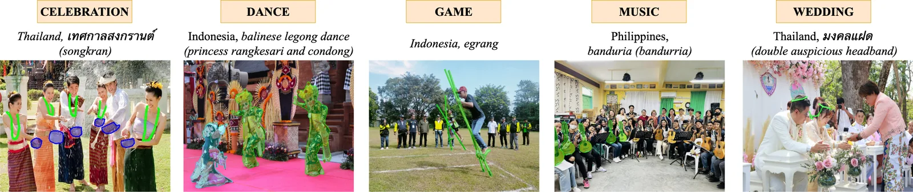
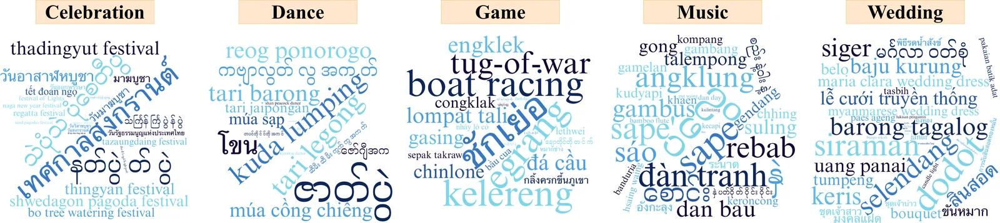
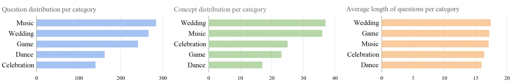
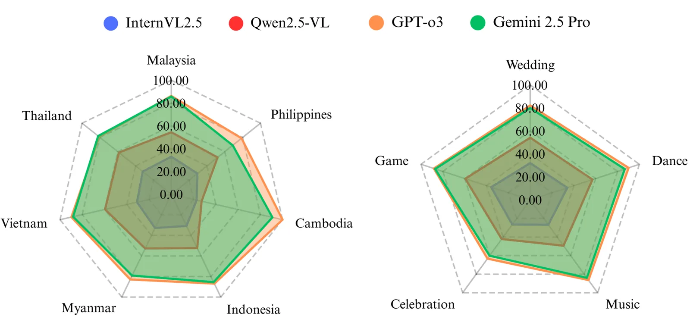
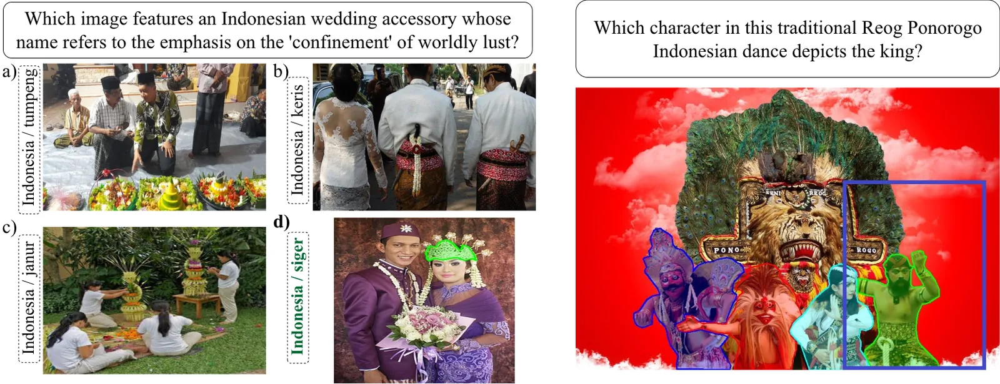

7
SEA countries
5
Categories
138
Cultural artifacts
1,065
Images
3,178
Questions
100%
Human-drawn masks
Multimodal vision-language models (VLMs) have made substantial progress in various tasks that require a combined understanding of visual and textual content, particularly in cultural understanding tasks, with the emergence of new cultural datasets. However, these datasets frequently fall short of providing cultural reasoning while underrepresenting many cultures. In this paper, we introduce the Seeing Culture Benchmark (SCB), focusing on cultural reasoning with a novel approach that requires VLMs to reason on culturally rich images in two stages: i) selecting the correct visual option with multiple-choice visual question answering (VQA), and ii) segmenting the relevant cultural artifact as evidence of reasoning. Visual options in the first stage are systematically organized into three types: those originating from the same country, those from different countries, or a mixed group. Notably, all options are derived from a singular category for each type. Progression to the second stage occurs only after a correct visual option is chosen. The SCB benchmark comprises 1,065 images that capture 138 cultural artifacts across five categories from seven Southeast Asia countries, whose diverse cultures are often overlooked, accompanied by 3,178 questions, of which 1,093 are unique and meticulously curated by human annotators. Our evaluation of various VLMs reveals the complexities involved in cross-modal cultural reasoning and highlights the disparity between visual reasoning and spatial grounding in culturally nuanced scenarios. The SCB serves as a crucial benchmark for identifying these shortcomings, thereby guiding future developments in the field of cultural reasoning.

The presented collection of images from our SCB encompasses visual representations of cultural concepts from seven countries, categorized across five dimensions: music, game, dance, celebration, and wedding. These images exhibit either a variety of cultural artifacts situated in diverse contexts (e.g., the depiction of the balinese legong dance showcases multiple characters, two princesses rangkesari, and one condong, with corresponding questions) or integrated distractors in addition to the primary concept (e.g., the image featuring the banduria, which displays Spanish guitars on the right side while the bandurias are positioned on the left).

Word clouds illustrating the concepts of 1,093 unique questions in SCB are categorized into five cultural themes: wedding, game, music, celebration, and dance. The variation in font size within these clouds reflects the frequency of concept occurrences relevant to each theme. A simplified form for better visualization.

The figures encompass a comprehensive analysis of the distribution of unique questions, concepts, and the average length of questions, segmented by both country and category.
Two-stage zero-shot evaluation. Acc is multiple-choice VQA accuracy (visual options; random guess is about 25%). mIoU is the mean Intersection over Union of the grounded region, evaluated with bounding boxes on questions answered correctly in stage 1. Type 1 uses options from within the same culture, Type 2 across cultures, Type 3 a balanced mix. Seed results are from Table 2 of the paper. A dash means the model cannot produce box or segment grounding. Click a column header to sort.
| Model | Group | T1 Acc | T1 mIoU | T2 Acc | T2 mIoU | T3 Acc | T3 mIoU | Overall Acc | Overall mIoU | Date | Source |
|---|
Best accuracy and best grounding disagree: GPT-o3 leads every Acc column while Qwen2.5-VL-7B leads every mIoU column. Reasoning and grounding are different skills.

The overall multiple-choice VQA accuracy of certain VLMs across different countries and categories.

The figure presents two examples of failures for each stage. The left side illustrates an example of multiple-choice VQA, where all VLMs fail to select the correct option. Conversely, the right side pertains to the spatial grounding, for another example. Notably, this specific output is generated by GPT-o3, which is the only VLM that accurately answers the multiple-choice VQA version of this spatial grounding question. The blue character on the far left identifies the correct segment, while GPT-o3 incorrectly selects the option on the far right.
Think your model understands culture? Prove it. Run the two-stage evaluation with the official code and the dataset, then submit your results and we will add them to the leaderboard:
Result JSON format:
{
"model": "YourModel-7B",
"group": "Open",
"t1_acc": 0.0, "t1_miou": 0.0,
"t2_acc": 0.0, "t2_miou": 0.0,
"t3_acc": 0.0, "t3_miou": 0.0,
"acc": 0.0, "miou": 0.0,
"paper_or_repo": "https://...",
"contact": "you@example.org"
}
Input: a culturally grounded question with visual options (stage 1), then the correctly chosen image and the question (stage 2). Output: the chosen option (stage 1), then a bounding box or segment of the cultural artifact that justifies the answer (stage 2). Metrics: multiple-choice accuracy (stage 1) and mean IoU against human-drawn masks (stage 2), zero-shot; only questions answered correctly in stage 1 advance to grounding.
We are exploring broader country and category coverage, richer distractor types, and video-based cultural reasoning. If you want to collaborate on culturally-aware multimodal AI or extend the benchmark to new regions, book a chat or email buraks@smu.edu.sg.
The benchmark annotations (questions, rationales, masks) are released under CC BY-NC-SA 4.0 for non-commercial research. The images were collected from the internet and are not owned by the authors; copyright remains with the original sources, and each dataset entry links its source. Seeing Culture is a test-only benchmark: please do not use it for training.
@inproceedings{satar-etal-2025-seeing,
title = "Seeing Culture: A Benchmark for Visual Reasoning and Grounding",
author = "Satar, Burak and
Ma, Zhixin and
Irawan, Patrick Amadeus and
Mulyawan, Wilfried Ariel and
Jiang, Jing and
Lim, Ee-Peng and
Ngo, Chong-Wah",
editor = "Christodoulopoulos, Christos and
Chakraborty, Tanmoy and
Rose, Carolyn and
Peng, Violet",
booktitle = "Proceedings of the 2025 Conference on Empirical Methods in Natural Language Processing",
month = nov,
year = "2025",
address = "Suzhou, China",
publisher = "Association for Computational Linguistics",
url = "https://aclanthology.org/2025.emnlp-main.1131/",
doi = "10.18653/v1/2025.emnlp-main.1131",
pages = "22227--22243",
ISBN = "979-8-89176-332-6"
}